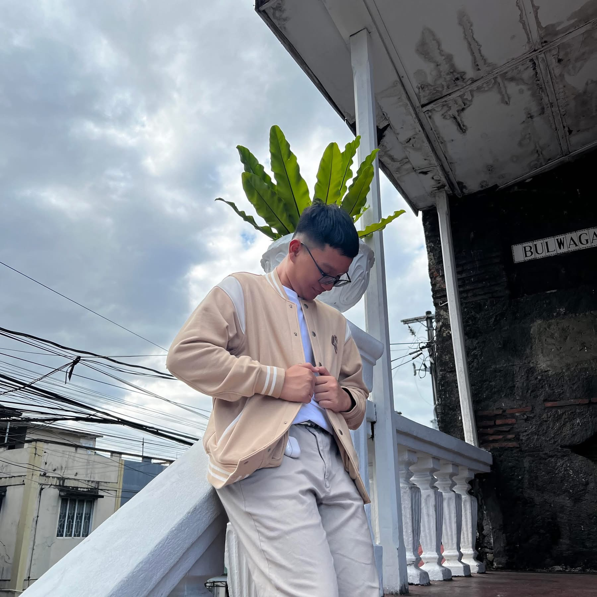
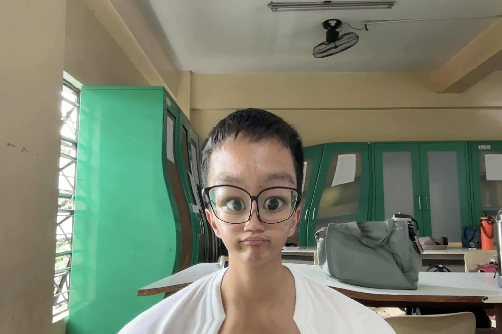
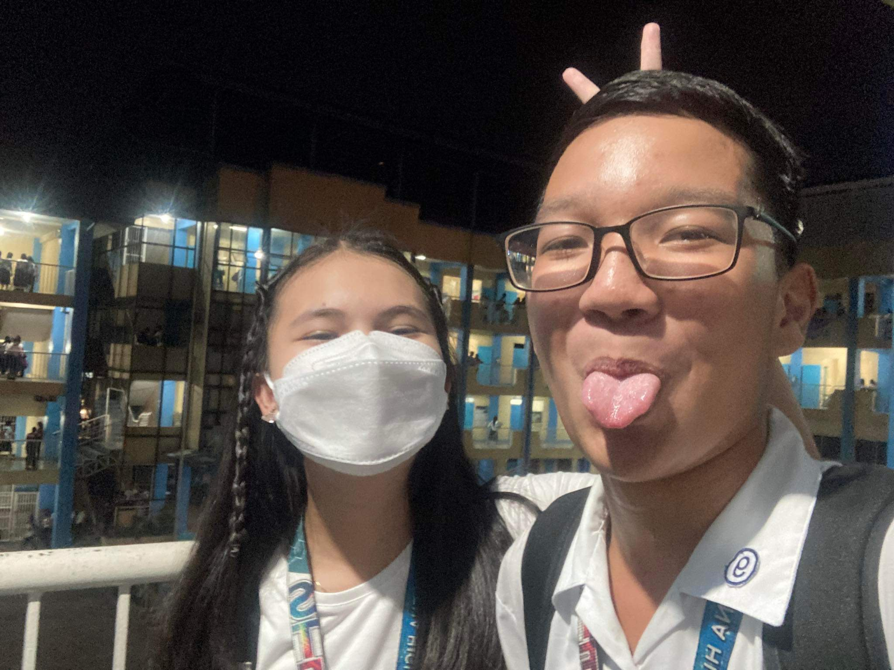
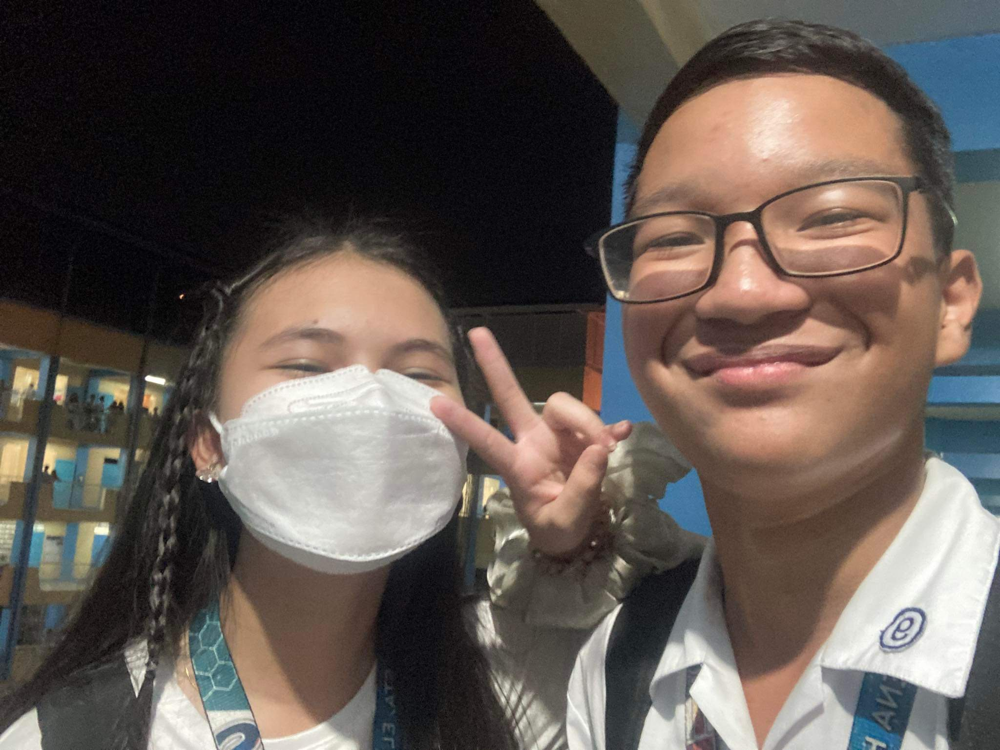
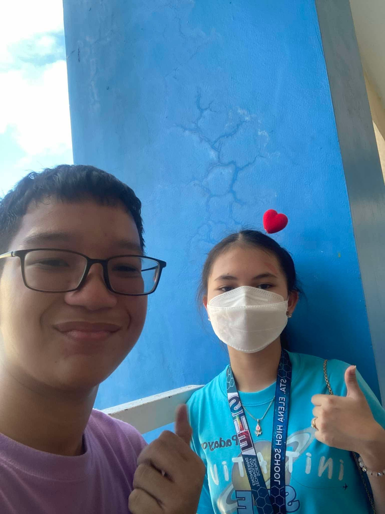
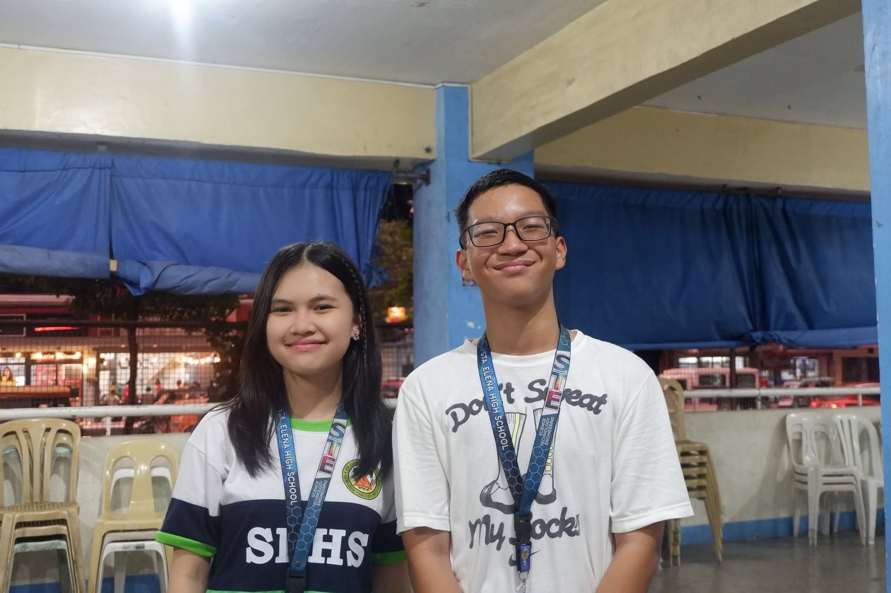

RYEVIN DE TORRES

Hi Ryevin! I hope this letter finds you well, eme. This part is all about you muna. First of all,
I want to tell you how great of a person you are. You are such a great guy, Rye. A sweet and mapangasar
brother to Kailey, she is so lucky to have you as her brother. Your bond is so cute and just continue to love
her unconditionally. Someday, she will realize and appreciate more the efforts you do for her.
Please learn to appreciate yourself and look at the brighter side in life. Appreciate the small achievements,
they are still achievements. Just by surviving and continuing each day especially when having a bad day is
already an achievement. A bad day doesn't mean its already a bad life. Don't be too harsh on yourself, I
understand what you feel, you want to achieve greater things in life and you will. In the right time and if
it is meant for you then you will have it.
Continue to be the person who dreams, I admire how passionate you are and to think na you have lots of goals
and dreams in life. I know you can achieve it in the future. Manifest it!





Okay, joke time na 'to, charot. Maraming salamat sa lahat, di ko alam pano kita naging close pero ayon. chos.
Eto na talaga. Thank you for being a wonderful friend and kuya (?) to me kahit na minsan masungit, masama tas
attitude ka (oo, ikaw yun). Pero in all honesty, you were the person who helped me especially when I was in
grade 8 whenever I was having a hard time. Nobody knows what my state was or if I was struggling but somehow
you were the person that I could rant to and ask for help. I am so grateful for that. You have done lots of
things for me which I appreciate a lot, no words can measure how thankful I am. Thank you for making me
feel appreciated and valued, lots of times I was down and I was underestimating
myself but you were the person who believed and cheered me up. Those simple words somehow helped me
kahit na alam mo naman I really don't believe sa sarili ko. Thank you for believing in me.
I don't know kung pano mo pa ko natitiis kausapin?? Im really sorry, super sorry, ultramega sorry, 100000x sorry
for all my actions and treatments that may have hurt you. I know naman na there are times na naiinis ka na sakin,
baka nasaktan ka because of me. Super sorry, I don't want to hurt your feelings naman. Especially when I went
all drama nung vacation, I was so gulo non and yet you still forced yourself to understand me. Sorry if I was
selfish that time and I wasn't there when you needed a friend.
Im so glad na I can be the person that you can somehow open up to? Ngl, ikaw lang naman kasi ata yung tao na nagoopen
or nagrarant sakin ng todo and that means a lot kasi I somehow feel idk a good friend or something. I want to be
the person that my friends can trust and tell about their rants in life pero thats not the case, idk how to
approach them or something kaya I feel like Im not important or something. So thank you for trusting me kahit
konti lang yan. I can always be your friend na kaya mong pagsabihan ng mga bagay sa mundo, if the world is too
harsh to you or its too nice to you. I will gladly be that friend. Remember that whenever life is too harsh, its
okay to cry it all out, tell me and I'll listen (wala nga lang advice
bulok ako dun eh sorry agad). Whats important is tumayo ka.
I AM SUPER DUPER UPER PER ER R PROUD OF YOUUUUU!! Im proud of you surviving and finishing your JHS!!!!!!!!!!!!
I am proud of what you've achieved, congratulationsss, you deserve high honors! You have grown so much (eme kala
mo naman nawitness ko pero alam ko naman yan) and thats an award, award is not just the outstanding shits, its
all about growth and the lessons you've learned in life that you can apply when you're in SHS or college na. I hope
you realize how amaaaazing you are. Throughout your JHS you have accomplished lots of achievements and you should
be proud of that, okay? Idol kaya kita (yieee). Always know that there is a person who will always be proud of you,
that's me. I will always tell you how proud I am. Be proud of yourself!!! Ang galing galing mo:)
Goodluck on your new journeyy in lifeee, senior high kanaaa?!?!?! Scary I know pero It will be another step for you to
achieve your dreams, malayo pa pero malayo na. Kayang kaya mo yan! I believe in youuuuuu, don't hesitate to ask
others for help (wag sakin wla ako matutulong shs yan eh, sorry agad. Emotional support nalang ako bes).
There are things in life that we can't achieve, ibig sabihin its not meant for us. May mas greater pa kasi para sayo,
wag mong damdamin masyado if di mo nakukuha ung isang bagay, bibigyan ka ni Lord ng mas malaking bagay pa kasi you deserve
more. If hindi ngayon, then soon, makukuha mo yun. Use also the experience as a tool to learn more and grow, learn from
your mistakes, san ka ba nagkulang then improve it. Di ka naman talo, never ka matatalo because you always win a lesson
and an experience. Yun naman ang important, you learn instead of beating yourself because you lost(in which I repeat
will never happen).
If things don't go the way we plan it to be, it's okay. Frustrating but it's okay, Lord has better plans for you.
Di ka naman niya iiwan and bibigyan ng pagsubok or something na di mo kayang i-solve. Everything has a solution, oo lahat.
Ano paba sasabihin ko? di ko na rin alam jusko.
Pero yun nanga, I just want to tell you and congratulate you for everythingggg. Sorry I couldn't give you something,
I really wanted to and I had a plan kaso di natuloy due to some circumstances(wow circumstances). Sorry talagaaa,
I wanted to do moreeeeeeeee and give you moree. Eto nalang ginawa ko, its simple, bulok ung website design pero
mahalaga ung content nalang HAHAHAHA charot. Sorry ah di kasi ako magaling gumawa tulad mo. Sana na kahit papano napasaya
kita or napaiyak? charot.
So againnn, thank you, sorry, im super proud of you and goodluck!
Thank you, Godbless and Mabuhay!!
- Attitude